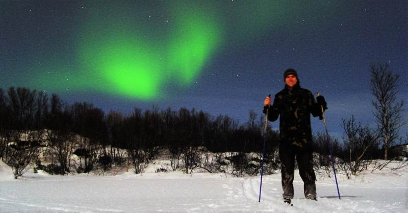

Really was a changing year for me. Was in the Philippines at the start of the year for a friend's wedding in Cebu on Mactan Island. I went to see where Magellan was killed by Lapu Lapu. Spent New Year's there (which is insane and I thoroughly recommend it to anyone) and even helped judge a miss-Gay Mabitac competition...
Then in May I headed home to de-junk. I'd had a ton of stuff in storage for ages (I hadn't really planned on being overseas so long) so it was time to turf out anything I didn't need. That actually turned out to be almost everything in storage. I don't know how I'd collected so much junk! (Actually, I do know. I'm a pack-rat)
Anyway, it was a hugely liberating process to whittle it all down to letters, photos, memorabilia and a few items of value that were worth keeping. I could fit my life almost in the boot of a car. (That brings back memories of moving from base to base)
Unfortunately, with all the de-junking to do, I ended up feeling incredibly rushed while down in Wellington. The time fairly flew by - and I didn't get the chance to see half the people I wanted to. (Probably spent half the time in that stupid storage place) I also regret selling stuff on trademe. The effort involved in waiting around for people to pick up the stuff wasn't worth what I sold the goods for. I should've just donated the lot. (I did take two car-loads of crap to the tip as well as one car-load of appliances to the 2nd hand store)
After my all-too-brief time in NZ, I went to Melbourne to visit Arran and Ariane for a few days. Melbourne was an instant hit with me. I just fell in love with the place. In fact, I was so in love, I'd decided to move there... but that didn't quite happen. (yet!)
After Melbourne, Liezl and I split up. Which was pretty tough to go through for both of us, but is for the best in the long run. We had different goals in life and it left me time to be incredibly selfish once again.
So my next break was another lads trip. This time to Sunny Newport in Pembrokeshire (Not Gwent), in Wales. Four of us went and stayed in a mate's 'caravan'. Actually, it was more like a compact 8-10 bed hotel room with wheels. The place was awesome.
Spent half the week in the Golden Lion pub. I got put to shame by a Welsh fulla who knew the Maori words to the New Zealand National Anthem (I don't) as well as the FULL pre-haka lyrics. Sure, he was a rugby-head, but I really should learn more than I currently know!
The beach there was fantastic (although the water was a little cool) and a highlight
of the trip was going to Oakwood theme park and acting like kids for the day.
Not too long after the Wales trip, I managed to get away with another group of lads for a hiking trip up in the Lake District. We tackled England's highest 'mountain' Scarfell Pike. Weather conditions were fairly decent until we hit the peak.. But all the hikes we did were epic - and I'd forgotten how much I missed getting out and about like that. The waterfall scrambling was a little crazy too. But was great fun jumping off waterfall cliffs into deep pools.
One of the coolest sights of the week was seeing a Harrier Jump-jet skimming the lake while I was out kayaking. Wish I'd taken my camera with me for that one.
And a little before the end of the year, I got myself a motorbike once more. I'd been watching some vlogs on youtube by a guy calling himself Mordeth13. He rides around Taiwan talking into a small video camera in his helmet. It reminded me so much of the feeling of riding, that I ended up buying the bike I'd always loved. A 1997 Honda VFR 750. (The last of the 750s)
It needed a little work doing to it (new exhaust, because Honda seem to make them out of cheese) but it's been such great value.
Wasn't sure what to do with myself for New Year's, so a mate and I flicked the random switch and took off to Norway. Landed at Oslo first for a couple of nights, then up to Tromso.
Tell you what, I didn't realise how expensive the place was. Or how weird it would be to only have an hour or so of twilight and not actually see the sun at all.
We kept bumping into the same British couple who were there on holiday as well. They'd the same idea about heading off cross-country skiing in the evening. Paul and I took our skis up to the where the tracks start and tried to figure out how it all works. I wouldn't say we were competent, but we did get a lot more efficient as the night went on.
At one point, we'd gone a fair way off-piste to try and find good vantage points to take photos from. At the time we were just taking photos of the lights Tromso village, but keeping an eye out for the northern lights. Paul saw something that looked like a cloud, but when we took a long exposure, it was quite greenish. So figured that was all we'd get to see. But we ended up finding a great spot (again - massively off-piste) away from all the lights, and by that time, the northern lights looked unmistakeably spectacular! The photos almost do the lights justice, but seeing them for real, dancing and moving.. Just incredible.

We spent the next few hours taking photos and just being a little stupid with it. Was so amazing. Think we got back at something like 4am. Time just flew!
Took a cable car up to the mountain overlooking the island of Tromso for New Years.
The sheer amount of fireworks that went off was phenomenal. I've never seen anything
like it. We hiked all around the Island actually, which was harder than it sounds
as all the walkways were covered in compacted snow (almost ice). It was only when
you went walking off the beaten path did it get a little more light & fluffy,
like normal snow, offering a lot more grip.
And as is typical, it didn't snow until we were literally waiting for our flight to leave. But while it hurt the pocket, it was a fantastic trip!